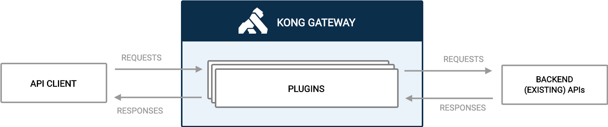

网关
什么是API网关
API网关是一个服务器，是系统的唯一入口。从面向对象设计的角度看，它与外观模式类似。API网关封装了系统内部架构，为每个客户端提供一个定制的API。它可能还具有其它职责，如身份验证、监控、负载均衡、缓存、请求分片与管理、静态响应处理。
API网关方式的核心要点是，所有的客户端和消费端都通过统一的网关接入微服务，在网关层处理所有的非业务功能。通常，网关也是提供REST/HTTP的访问API。服务端通过API-GW注册和管理服务。

为什么需要API网关
下面从单体应用到微服务演变的过程去阐述，回顾单体应用时代，在业务简单、团队组织规模很小的时候，我们常常把功能都几种与一个应用中，统一部署，统一测试，如下图： 随着业务的迅速发展，组织成员日益增多。将所有的功能几种在一个Tomcat中的时候，每更新一个功能模块，势必要更新所有的程序。牵一发而动全身，系统将很难维护。
随着业务的迅速发展，组织成员日益增多。将所有的功能几种在一个Tomcat中的时候，每更新一个功能模块，势必要更新所有的程序。牵一发而动全身，系统将很难维护。
单体应用满足不了日趋增长的需求之后，微服务出现了。我们利用微服务的思想，将原来的单体应用进行微服务化。将原来集中于一体的功能（如商品、订单服务）进行拆分，每个功能模块又各自的自成体系的发布、运维等功能。这样就解决了单体应用的弊端，如下：

这时，我们还没有看到API Gateway。举例来说，原先IOS、Android、PC客户端调用服务的地方，需要多个URL地址，有订单的、商品的、用户的。微服务化后就必须有统一的出入口，这种情况下，API Gateway就出现了。API Gateway很好的解决了微服务下调用、统一接入等问题，如下图所示：

有了API网关之后，各个API服务提供团队可以专注于自己的业务逻辑处理，而API网关更专注于安全、流量、路由等问题。
看到上面的图示与描述，我们可能会想到另外一个与网关类似的东西——代理。网关与代理的区别：代理是纯粹的数据透传，协议不会发生变化；网关在数据透传的背景下，还有设计协议的转换，比如上图中用户请求传输到网关的协议是HTTP，通过网关透传到下游则可能已经转换成企业内部的RPC了(比如JSF、Dubbo等企业自研的RPC框架)。
网关的分类和功能

主流网关
Zuul 2.0
背景
Zuul是Netflix 出品的一个基于 JVM 路由和服务端的负载均衡器，在2014年被Pivotal集成至Spring Cloud微服务框架中。Zuul设计理念在于实现动态路由、监视、弹性、安全性等功能, 其亮点在于可动态发布的过滤器机制。
架构
Zuul 2.0是一个运行前置过滤器(inbound filters)的Netty服务，然后使用一个Netty客户端代理请求，然后在运行后置过滤器(outbound filters)后返回响应。

过滤器
过滤器是Zuul业务逻辑的核心所在。它们具有执行大量动作的能力，并且可以在请求-响应生命周期的不同部分运行，如上图所示。
- 前置过滤器在在代理请求之前运行，并且可以用于身份验证，路由和修饰请求之类的操作。
- 端点过滤器可用于返回静态响应，否则内置
ProxyEndpoint过滤器会将请求路由到源。 - 后置过滤器在返回响应后运行，可用于装饰客户端响应或添加自定义响应头。
优点
Zuul基于java开发，java由于拥有大量群众基础，因此对大多数程序员友好。
API应具备多种定制化流量控制，由于Spring cloud基于Java平台的原因，故对于绝大多数开发人员来说兼容性高。
开源时间长，落地实践多，生产环境下运行稳定，坑少。
缺点
Zuul出世尚早，云原生概念还不普及，因此没有针对云原生的理念去设计API网关，也没有原生兼容Kubernetes、Mesos等容器编排平台，网关本身也不是CRD资源。再者就是Spring cloud支持java，所以对于Zuul来说扩展性低。
有些读者可能会有疑问，既然Zuul是基于Spring Cloud微服务框架设计的API网关，那么在目前流行的Kubernetes平台上岂不是发挥不了其优势了，其实Spring Cloud也考虑过这点，如何在脱离Spring Cloud的情况下在Kubernetes上使用Zuul，于是Spring旗下开发了一个子项目Spring cloud Kubernetes，其作用就是将Kubernetes中的服务模型映射至Spring cloud服务模型中，从而可以使用Spring cloud的sdk去实现对Kubernetes服务的管理。借助于Spring cloud Kubernetes项目，Zuul可以和Kubernetes融合并实现API网关能力，也可勉强称作云原生API网关。但是换个角度想问题， Kubernetes天然具备微服务能力，且有许多相应的原生API网关，我们为何不去使用呢？在Spring Cloud与Kubernetes中间强加一层适配器似乎有点多此一举的意思。
就安全层面而言，Zuul通过安全框架可以实现绝大多数安全功能，但因为这些安全框架多基于Java编写，很难应用到在以Go语言为主的云原生平台中，这也是Zuul在安全层面面临的现状。
Kong
背景
Kong是一个云原生，快速可扩展的分布式微服务抽象层（通常被称作API网关，API中间件或服务网格），其核心价值是高性能和可扩展性，于2015年作为一个开源项目提供。
简单的说，Kong在Nginx的反向代理基础上，通过Lua实现了脚本化的扩展，同时所有管理功能都是通过REST来实现。其内部还使用了大量的缓存，所以基本没有阻塞式的操作，性能非常优秀。
Kong的扩展性主要体现在其插件机制，可方便的为路由添加各种插件，
我们来先了解下另一种不陌生的中间件——OpenResty。
OpenResty
OpenResty是一个基于 Nginx 与 Lua 的高性能 Web 平台，其内部集成了大量精良的 Lua 库、第三方模块以及大多数的依赖项。用于方便地搭建能够处理超高并发、扩展性极高的动态 Web 应用、Web 服务和动态网关。因此，我们可以做出各种符合我们需要的网关策略的Lua脚本，以其为基础构建高性能的网关系统。
Kong
Kong基于OpenResty，是一个云原生、快速、可扩展、分布式的Api 网关。继承了OpenResty的高性能、易扩展性等特点。Kong通过简单的增加机器节点，可以很容易的水平扩展。同时功能插件化，可通过插件来扩展其能力。而且在任何基础架构上都可以运行。具有以下特性：
- 提供了多样化的认证层来保护Api。
- 可对出入流量进行管制。
- 提供了可视化的流量检查、监视分析Api。
- 能够及时的转换请求和相应。
- 提供log解决方案
- 可通过api调用Serverless 函数。
业务网关与流量网关

对于具体的后端业务应用或者是服务和业务有一定关联性的策略网关就是上图左边的架构模型——业务网关。 业务网关针对具体的业务需要提供特定的流控策略、缓存策略、鉴权认证策略等等。
与业务网关相反，定义全局性的、跟具体的后端业务应用和服务完全无关的策略网关就是上图右边所示的架构模型——流量网关。流量网关通常只专注于全局的Api管理策略，比如全局流量监控、日志记录、全局限流、黑白名单控制、接入请求到业务系统的负载均衡等，有点类似防火墙。Kong 就是典型的流量网关。
这里需要补充一点的是，业务网关一般部署在流量网关之后、业务系统之前，比流量网关更靠近业务系统。通常API网指的是业务网关。 有时候我们也会模糊流量网关和业务网关，让一个网关承担所有的工作,所以这两者之间并没有严格的界线。
Kong 的架构

| 概念/功能 | 描述 |
|---|---|
| 服务Service | 服务对象是Kong Gateway用来引用其管理的上游API和微服务的ID。 |
| 路线Routes | 路由指定在请求到达API网关后如何（以及是否）将请求发送到其服务。单个服务可以具有多个路由。 |
| 消费者Consumers | 使用者代表您的API的最终用户。使用使用者对象，您可以控制谁可以访问您的API。他们还允许您使用日志记录插件和Kong Vitals报告流量。 |
| Kong Manager | Kong Manager是基于视觉浏览器的工具，用于监视和管理Kong Enterprise。 |
| Admin API | Kong Gateway带有内部RESTful API，用于管理目的。API命令可以在集群中的任何节点上运行，并且配置将一致地应用于所有节点。 |
| Plugins | 插件提供了用于修改和控制Kong Gateway功能的模块化系统。例如，为了保护您的API，您可能需要一个访问密钥，可以使用key-auth插件进行设置。插件提供了广泛的功能，包括访问控制，缓存，速率限制，日志记录等等。 |
| 限速插件Rate Limiting plugin 限速高级插件Rate Limiting Advanced plugin | 使用此插件，您可以限制客户端在给定时间内可以发出的HTTP请求数量。 此插件的高级版本还提供了滑动窗口支持，并可以通过标题和服务进行限制。 |
| 代理缓存插件Proxy Caching plugin 代理缓存高级插件Proxy Caching Advanced plugin | 该插件提供了反向代理缓存实现。它在给定的时间段内根据响应代码，内容类型和请求方法缓存响应实体。 此插件的高级版本支持Redis和Redis Sentinel部署。 |
| 密钥验证插件Key Auth plugin 密钥验证-加密插件Key Auth - Encrypted plugin | 此插件可让您向服务或路由添加密钥身份验证（也称为API密钥）。 此插件的高级版本将API密钥以加密格式存储在Kong Gateway数据存储区中。 |
| 负载均衡Load Balancing | Kong Gateway提供了两种负载平衡方法：基于DNS的直接方法或使用环形平衡器的方法。在本指南中，您将使用环形平衡器，该平衡器需要配置上游和目标实体。使用此方法，后端服务的添加和删除由Kong Gateway处理，并且不需要DNS更新。 |
| 用户授权（RBAC） | Kong Gateway（Enterprise）通过基于角色的访问控制（RBAC）处理用户授权。启用后，RBAC允许您创建团队和管理员，并在工作空间内或跨工作空间为他们分配精细权限。 |
| 开发者门户Developer Portal | 开发人员门户网站为所有开发人员提供了一个单一的真实来源，以查找，访问和使用服务。 |
请求流程

每个客户请求都会先到达Kong 网关，然后再代理到最终的API。在请求和响应之间，Kong将执行已安装配置的插件，从而扩展API功能集。
Gateway
简介
Gateway是在Spring生态系统之上构建的API网关服务，基于Spring 5，Spring Boot 2和 Project Reactor等技术。Gateway旨在提供一种简单而有效的方式来对API进行路由，以及提供一些强大的过滤器功能， 例如：熔断、限流、重试等。
Spring Cloud Gateway 具有如下特性：
- 基于Spring Framework 5, Project Reactor 和 Spring Boot 2.0 进行构建；
- 动态路由：能够匹配任何请求属性；
- 可以对路由指定 Predicate（断言）和 Filter（过滤器）；
- 集成Hystrix的断路器功能；
- 集成 Spring Cloud 服务发现功能；
- 易于编写的 Predicate（断言）和 Filter（过滤器）；
- 请求限流功能；
- 支持路径重写。
相关概念
Route（路由）：路由是构建网关的基本模块，它由ID，目标URI，一系列的断言和过滤器组成，如果断言为true则匹配该路由；
Predicate（断言）：指的是Java 8 的 Function Predicate。 输入类型是Spring框架中的ServerWebExchange。 这使开发人员可以匹配HTTP请求中的所有内容，例如请求头或请求参数。如果请求与断言相匹配，则进行路由；
Filter（过滤器）：指的是Spring框架中GatewayFilter的实例，使用过滤器，可以在请求被路由前后对请求进行修改。
工作原理

客户端向 Spring Cloud Gateway 发出请求。然后在 Gateway Handler Mapping 中找到与请求相匹配的路由，将其发送到 Gateway Web Handler。Handler 再通过指定的过滤器链来将请求发送到我们实际的服务执行业务逻辑，然后返回。过滤器之间用虚线分开是因为过滤器可能会在发送代理请求之前（“pre”）或之后（“post”）执行业务逻辑。
Webflux模型
Webflux模式替换了旧的Servlet线程模型。用少量的线程处理request和response io操作，这些线程称为Loop线程，而业务交给响应式编程框架处理，响应式编程是非常灵活的，用户可以将业务中阻塞的操作提交到响应式框架的work线程中执行，而不阻塞的操作依然可以在Loop线程中进行处理，大大提高了Loop线程的利用率。官方结构图：

Webflux虽然可以兼容多个底层的通信框架，但是一般情况下，底层使用的还是Netty，毕竟，Netty是目前业界认可的最高性能的通信框架。而Webflux的Loop线程，正好就是著名的Reactor 模式IO处理模型的Reactor线程，如果使用的是高性能的通信框架Netty，这就是Netty的EventLoop线程。
路由规则
Spring Cloud Gateway 的功能很强大，我们仅仅通过 Predicates 的设计就可以看出来，Spring Cloud Gataway 帮我们内置了很多 Predicates 功能。
Spring Cloud Gateway 是通过 Spring WebFlux 的 HandlerMapping 做为底层支持来匹配到转发路由，Spring Cloud Gateway 内置了很多 Predicates 工厂，这些 Predicates 工厂通过不同的 HTTP 请求参数来匹配，多个 Predicates 工厂可以组合使用。
断言Predicate 介绍
Predicate 来源于 Java 8，是 Java 8 中引入的一个函数，Predicate 接受一个输入参数，返回一个布尔值结果。该接口包含多种默认方法来将 Predicate 组合成其他复杂的逻辑（比如：与，或，非）。可以用于接口请求参数校验、判断新老数据是否有变化需要进行更新操作。
在 Spring Cloud Gateway 中 Spring 利用 Predicate 的特性实现了各种路由匹配规则，有通过 Header、请求参数等不同的条件来进行作为条件匹配到对应的路由。下图总结了 Spring Cloud 内置的几种 Predicate 的实现。

主流网关对比
| Ambassador | Zuul | Gloo | Kong | Spring Cloud Gateway | |
|---|---|---|---|---|---|
| 用途 | 微服务网关 | 微服务网关 | 微服务网关 | 企业级API管理 | 微服务网关 |
| 版本 | 社区版/Pro版 | 社区版 | 社区版/企业版 | 社区版/企业版 | |
| Star | 2.4k | 8.5k | 1.9k | 24.2k | |
| Fork | 356 | 1.7k | 130[lw1] [PM2] | 3.1k | |
| 开发语言 | Python | Java | Go | Lua | Java |
| 基于代理 | Envoy | JVM | Envoy | Nginx | |
| 学习曲线 | 简单 | 适中 | 简单 | 适中 | |
| Kubernetes | 原生支持 | 组件支持 | 原生支持 | 插件支持 | |
| 规则配置 | |||||
| 配置语言 | yaml | restapi | yaml | admin restapi | |
| 配置服务类型 | 声明式 | 命令式 | 声明式 | 命令式 | |
| 部署 | |||||
| Kubernetes | 简单 | 适中 | 简单 | 适中 | |
| 部署模式 | 金丝雀/灰度 | 金丝雀 | 金丝雀 | 金丝雀 | |
| 配置存储 | Kubernetes Etcd组件 | 内存 | Kubernetes Etcd组件 | Postgres、Cassandra | |
| 可扩展性 | 外部集成 | 插件 | 插件 | 插件 | |
| 基本功能 | |||||
| 服务发现 | 动态 | 动态 | 动态 | 动态 | |
| 协议 | http、https、grpc、tcp、udp、tcp+ssl | http、https | http、https、grpc | http、https、grpc、tcp、udp | |
| 限速 | 支持 | 自开发 | 支持 | 支持 | |
| 熔断 | 支持 | 自开发/组件 | 支持 | 支持 | |
| 健康检查 | 支持 | 自开发/组件 | 支持 | 支持 | |
| 负载均衡 | 支持 | 支持 | 支持 | 支持 | |
| Istio集成 | 支持 | 不支持 | 支持 | 不支持 | |
| Serverless | 支持 | 不支持 | 支持 | 插件支持 | |
| 安全功能 | |||||
| Web应用防火墙 | 支持 | 自开发/组件 | 支持 | 插件支持 | |
| 访问控制 | 支持[lw3] [PM4] | 自开发/组件 | 支持 | 插件支持 | |
| 基本认证授权 | Basic Auth、OIDC | 自开发/组件 | JWT、API Keys、OPA Authorization、LDAP、Custom Auth server、Plugin Auth | Basic Auth、HMAC、JWT、Key、LDAP、OAuth 2.0、PASETO、OIDC | |
| SSL证书管理 | 支持 | 自开发/组件 | 不支持 | 插件支持 | |
| 数据丢失防护 | 不支持 | 自开发/组件 | 支持 | 不支持 | |
| CORS | 支持 | 自开发/组件 | 支持 | 插件支持 | |
| JWT细粒度认证授权 | 支持 | 自开发/组件 | 支持 | 插件支持 | |
| 限速服务 | 支持 | 自开发/组件 | 支持 | 插件支持 |